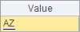
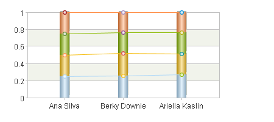
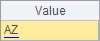
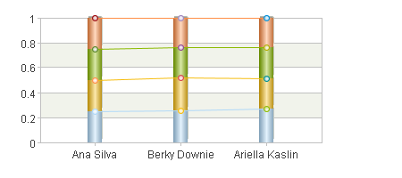
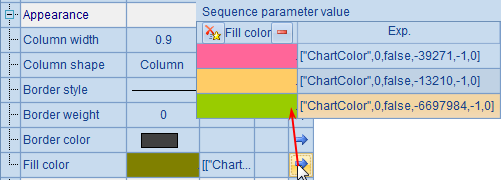
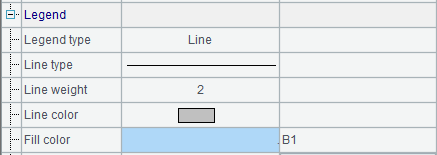

12.9.1 Data properties
The text element has a relatively simple function. It defines specified text in a given position. The text element is positioned using physical axes, rather than the logical axes.
The following plotting algorithm shows how to use the text element:
|
|
A |
|
1 |
=canvas() |
|
2 |
=demo.query("select * from FRUITS") |
|
3 |
=A1.plot("BackGround") |
|
4 |
=A1.plot("EnumAxis","name":"x","xStart":0.2,"xEnd":0.9,"xPosition":0.7) |
|
5 |
=A1.plot("NumericAxis","name":"y","location":2,"yStart":0.7,"yPosition":0.2) |
|
6 |
=A1.plot("Column","axis1":"x","data1":A2.(NAME),"axis2":"y","data2": A2.(UNITPRICE)) |
|
7 |
=A1.plot("Text","text":"Fruits","textFont":"Arial","textStyle":3,"textSize":16,"textColor":-16750900,"data1":0.5,"data2":-30) |
|
8 |
=A1.plot("Text","text":"Column chart","textFont":"Arial","textSize":14,"textColor": -16711732,"data1":0.5,"data2":-14) |
|
9 |
=A1.draw@p(300,200) |
This is an algorithm for plotting a column chart. It uses the text element to add text in A7 and A8 besides defining the background, axes and the column element. Properties of text are as follows:

  
 
The text element is defined by setting data right through its properties, as well as by using coordinate parameters X and Y to position the physical axes. Here X value is set with physical coordinates calculated pro rata, and Y value set by pixels. Which method should be used to define the coordinate value is determined by the value range.
The properties of the text element include the text font, text style, text size and text color, which are the same for text properties of other chart elements. Here A7 specifies size-3 blue text in bold italic type. A8 only modifies the text color.
Plotting result is:

A chart title has been added in the specified position.
The text can be rotated by changing the text element’s Rotation angle property. For instance, modifying the chart parameter in A7 to change this property:

This way the text Fruits will rotate clockwise around the specified coordinate point.
